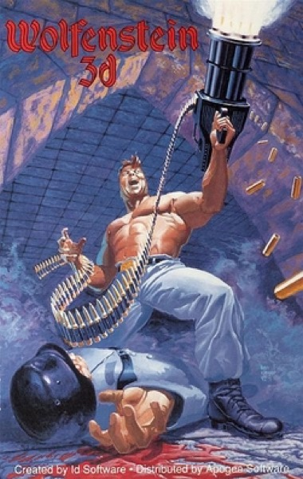

Shooter · 1992
Wolfenstein 3D
id proved a PC could run a corridor at speed, and the genre had a name.

Cover: Wikipedia: Wolfenstein 3D
Facts
- Released
- 1992-05-05
- Genre
- FPS
- Category
- Shooter
- Platforms
- Mobile, Nintendo, PC, PlayStation, Retro home computer, Xbox
- Developers
- Id Software, Interplay Entertainment, Nerve Software, Raven Software
- Publishers
- 3D Realms, Activision, Apogee Software, Atari, BAM! Entertainment, Bethesda Softworks, Id Software, Imagineer, Interplay Entertainment, MacPlay, Manaccom, Valve Corporation